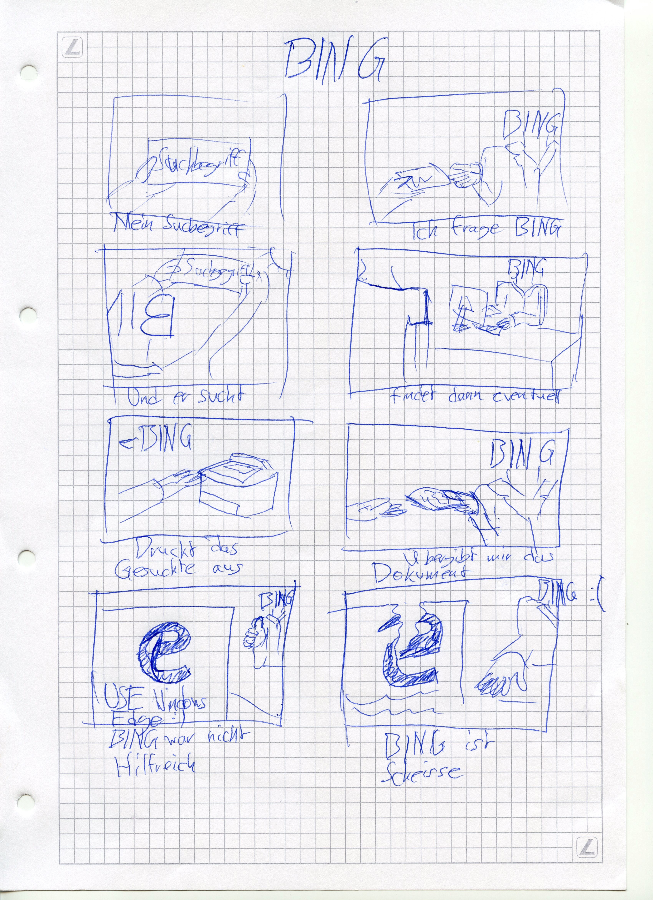

Gruppenarbeit
Ich war für die erstellung der Webseite, Storyboards und für den Film zuständig.
Storyboards
Links ist das Storyboard für Google abgebildet und rechts das Storyboard für Bing.
Website
Das Wireframe welches wir hatten, war einbisschen wenig und habe somit einbisschen improvisiert.
Film
Für den Film musste ich sehr viel im Hintergrund machen was erklärt das ich nicht so lange vor der Kamera stehe. Mein Schneideprogramm ist Adobe Premiere Pro, die gekaufte Version. Ich bin ziemlich vertraut mit der Premiere Pro Umgebung da ich schon einige Videoprojekte realisiert habe, diese sind jedoch Qualitativ hochwertiger als diser Film.